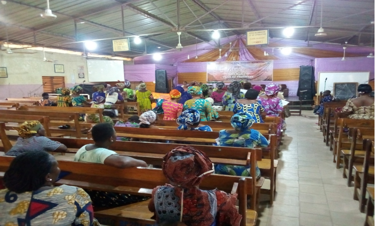
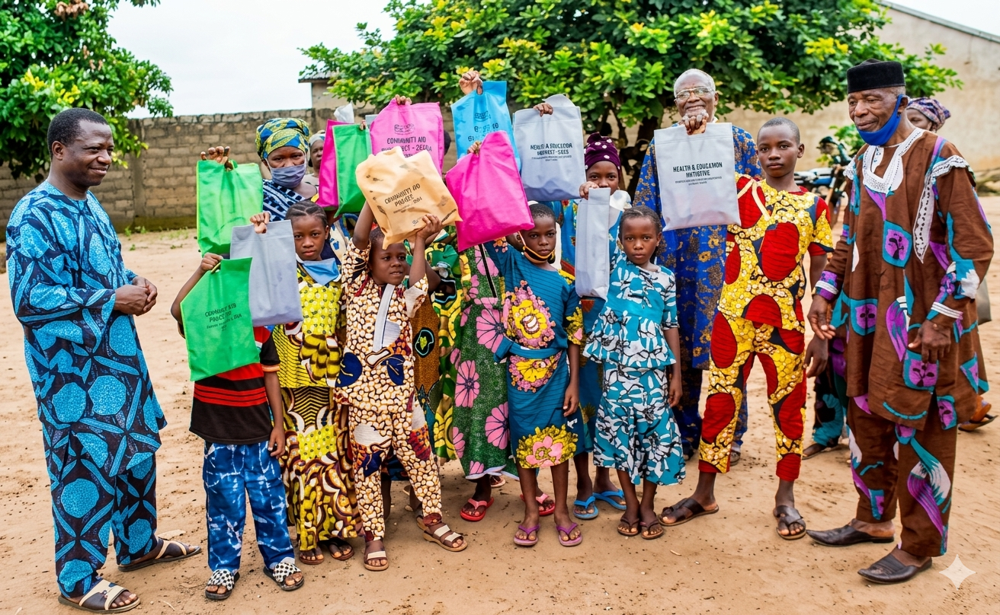
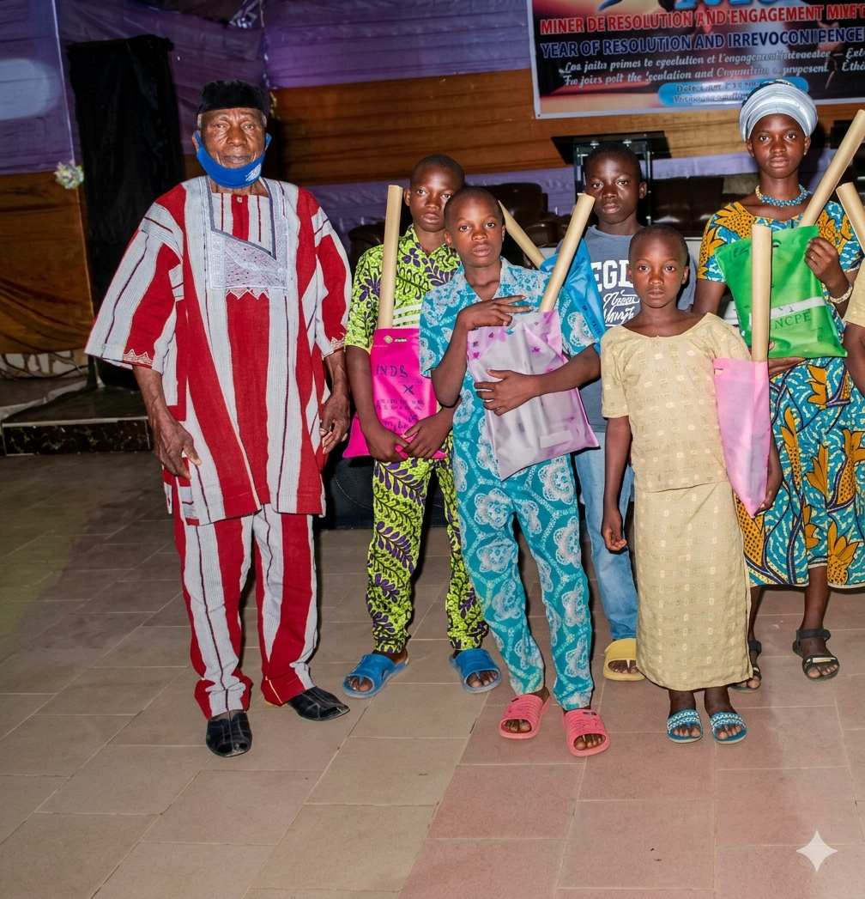

ACAVO œuvre chaque jour pour soutenir les affligés, les veuves et les orphelins, en leur redonnant espoir, dignité et un avenir meilleur.
ACAVO (Association de la Compassion à l'Endroit des Affligés, des Veuves et des Orphelins) est une organisation qui accompagne les personnes les plus vulnérables.
Face à la précarité, au deuil et à l'isolement, elle agit comme un véritable soutien, en offrant écoute, aide et réconfort. Guidée par des valeurs de solidarité et d'humanité, ACAVO met l'humain au centre de ses actions.
L'association intervient chaque jour pour aider les affligés, les veuves et les orphelins à retrouver un cadre rassurant et un peu de stabilité.
À travers ses initiatives, ACAVO travaille à construire une société plus solidaire, où chacun peut se relever et avancer avec espoir.
Des initiatives pensées pour accompagner, protéger et reconstruire des vies.
ACAVO apporte un soutien concret aux personnes en situation de vulnérabilité à travers des aides adaptées à leurs besoins essentiels.
ACAVO organise des initiatives sociales pour renforcer la solidarité, créer du lien et apporter de l'espoir au sein des communautés.
ACAVO collabore avec des acteurs publics, privés et associatifs afin de renforcer l’impact de ses actions et développer des initiatives durables.
L’association œuvre pour favoriser l’intégration des personnes vulnérables dans la société, en luttant contre l’exclusion et les inégalités.

Chaque geste compte. Participez à nos actions et faites une réelle différence.
Des initiatives concrètes pour accompagner ceux qui en ont le plus besoin, là où ils se trouvent.



Chaque contribution compte. Rejoignez-nous ou contactez-nous pour faire la différence.
Avez-vous des préoccupations ?
Contactez-nous via le formulaire ou
Appelez-nous au : +229 01 97 08 19 73